장롱 이전·장롱 분해, 붙박이장 해체부터 재설치·장롱 버리기까지
코니처가 한번에 진행합니다
까사미아·리바트·한샘에서 13년간 가구를 다뤄 온 기사가 직접 방문합니다. 이사하는 날, 방을 바꾸는 날, 오래 쓴 장롱을 버리는 날까지 붙박이장을 해체하고 옮겨 새 공간에 반듯하게 다시 세우는 일을 서울·경기·수도권 전 지역에서 진행합니다.
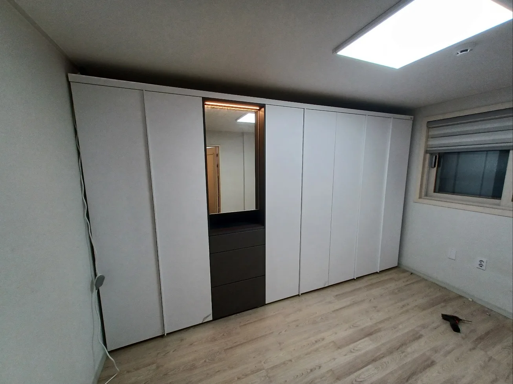
붙박이장 이전설치란
통째로 들어 옮기는 가구가 아니라
몸통·도어·선반을 나눠 다시 세우는 작업입니다
붙박이장은 여러 통의 몸통이 벽과 천장에 맞물려 하나처럼 보이는 구조입니다
붙박이장은 겉보기에는 하나의 큰 가구지만, 실제로는 몸통 여러 통이 서로 연결되고 벽·천장 쪽에 고정된 구조입니다. 무거운 도어를 단 채로 옮기면 경첩이 뜯기기 쉽고, 결합 볼트를 무리하게 풀면 몸통이 뒤틀려 새 집에서 도어가 맞지 않게 됩니다.
코니처 기사는 까사미아 5년, 리바트 5년, 한샘 3년 동안 각 브랜드 가구를 직접 다뤄 왔습니다. 브랜드마다 다른 몸통 결합 방식과 도어·서랍 레일 구조를 알고 있어서, 설명서가 없어도 해체 순서를 빠르게 잡습니다.
도어와 선반, 서랍을 먼저 분리해 보호 포장하고 몸통을 순서대로 해체합니다. 새 집에서는 바닥 기울기를 확인해 수평을 맞춘 뒤 몸통을 연결하고, 마지막에 도어 사이 틈이 고르게 맞는지까지 조정합니다.
이삿짐센터에서 장롱은 어렵다고 했다면
붙박이장은 일반 이사 범위에서 빠지는 경우가 많습니다. 해체·재설치만 따로 맡기실 수 있고, 이사 일정에 맞춰 짐 빼기 전 해체와 입주 후 설치를 나눠 진행할 수도 있습니다.
이럴 때 필요합니다
이런 상황에 붙박이장 이전설치가 필요합니다
실제로 문의가 많은 대표적인 세 가지 상황입니다
이사할 때
기존 집에서 붙박이장을 해체해 옮기고, 새 집 벽 길이와 천장 높이에 맞춰 다시 설치합니다.
방을 옮기거나 배치를 바꿀 때
안방에서 작은방으로, 또는 같은 방에서 벽을 바꿔 다시 세웁니다. 통 수를 나눠 두 방에 설치할 수도 있습니다.
장롱을 버릴 때
벽과 바닥이 상하지 않게 해체한 뒤, 아파트 단지 안 지정된 폐기 장소까지 옮겨 드립니다.
시공 가능 브랜드
이런 붙박이장·장롱을 이전·재설치합니다
문의가 많은 대표 브랜드입니다. 목록에 없는 브랜드도 사진으로 확인해 드립니다
한샘 붙박이장 이전설치
여닫이·슬라이딩 붙박이장 · 화장대 일체형 포함
리바트 붙박이장 이전설치
장롱·슬라이딩장 · 거울도어형 포함 해체·재조립
에넥스 붙박이장 이전설치
슬라이드 장롱·붙박이장롱 · 이전, 재배치, 철거
까사미아 장롱
옷장·장롱 · 이전재설치, 방간이동
장롱 버리기
붙박이장 철거 · 단지 내 폐기 장소까지 운반
그 외 브랜드 붙박이장
여닫이·슬라이딩·거울문 장롱 · 브랜드를 몰라도 사진으로 확인
※ 코니처는 각 브랜드의 공식 업체가 아닌, 붙박이장 이전·재설치 전문 업체입니다.
시공 사례
붙박이장 이전설치 시공 사례
코니처가 실제로 진행한 해체·재설치·철거 현장입니다
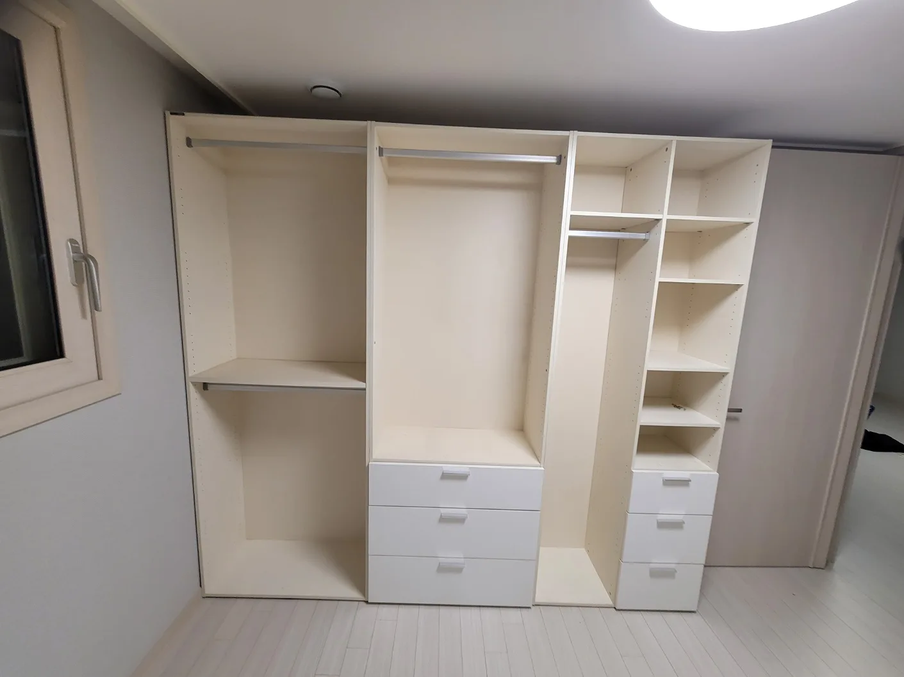
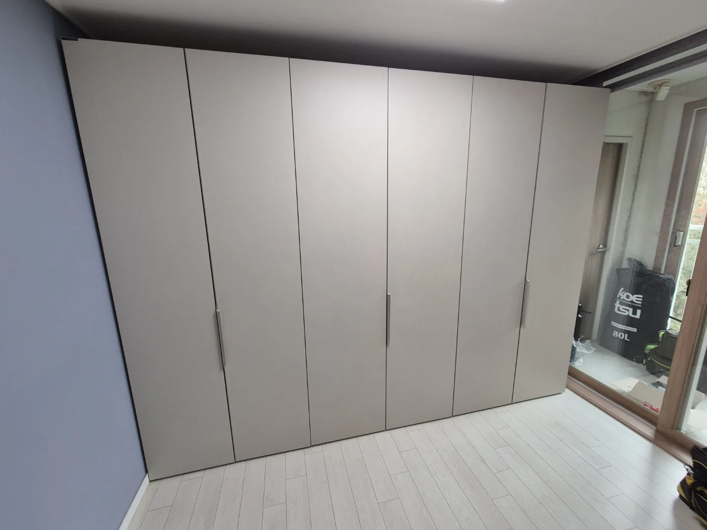
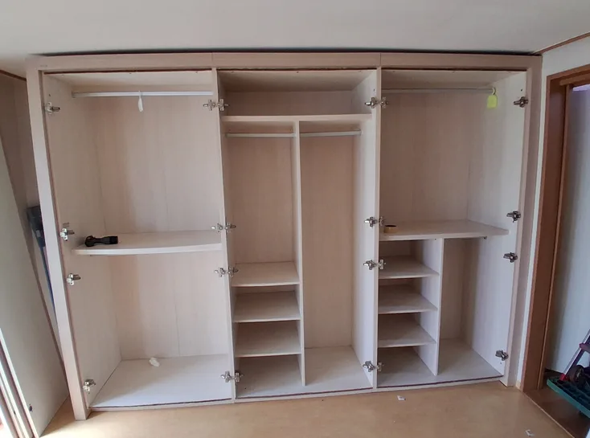
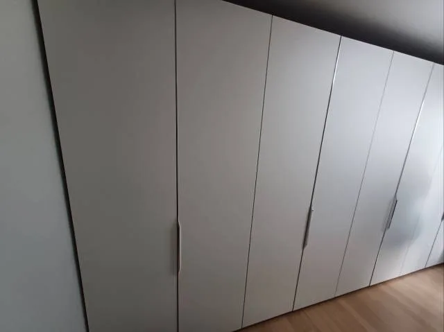
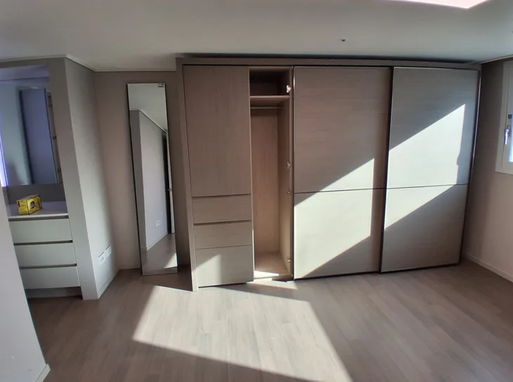
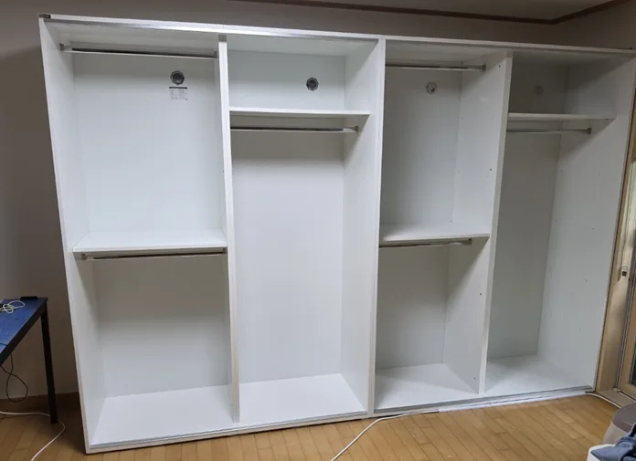
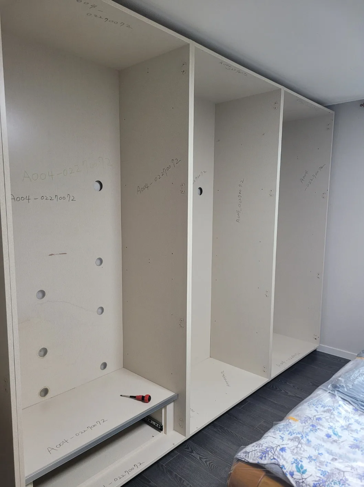
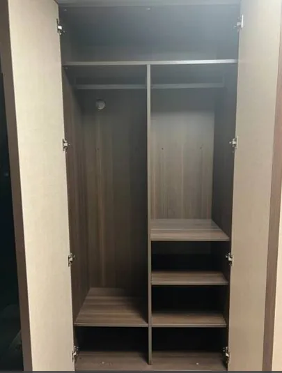
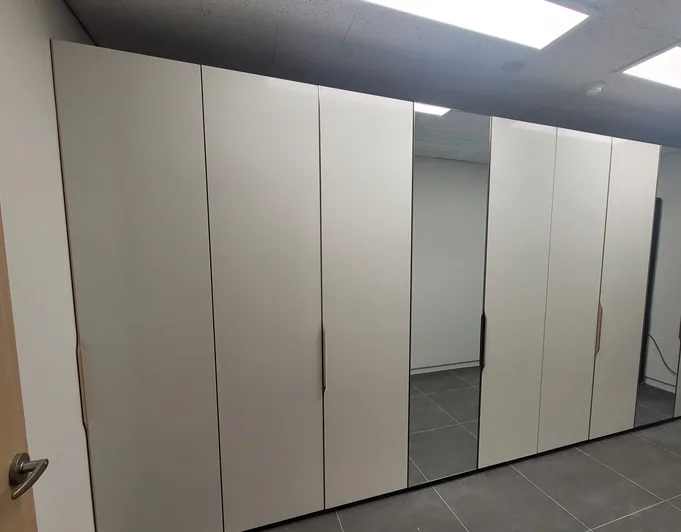
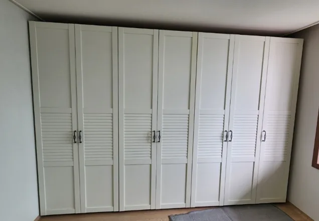
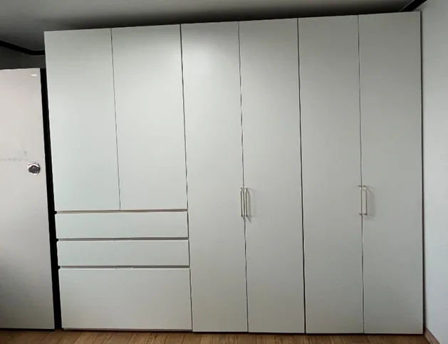
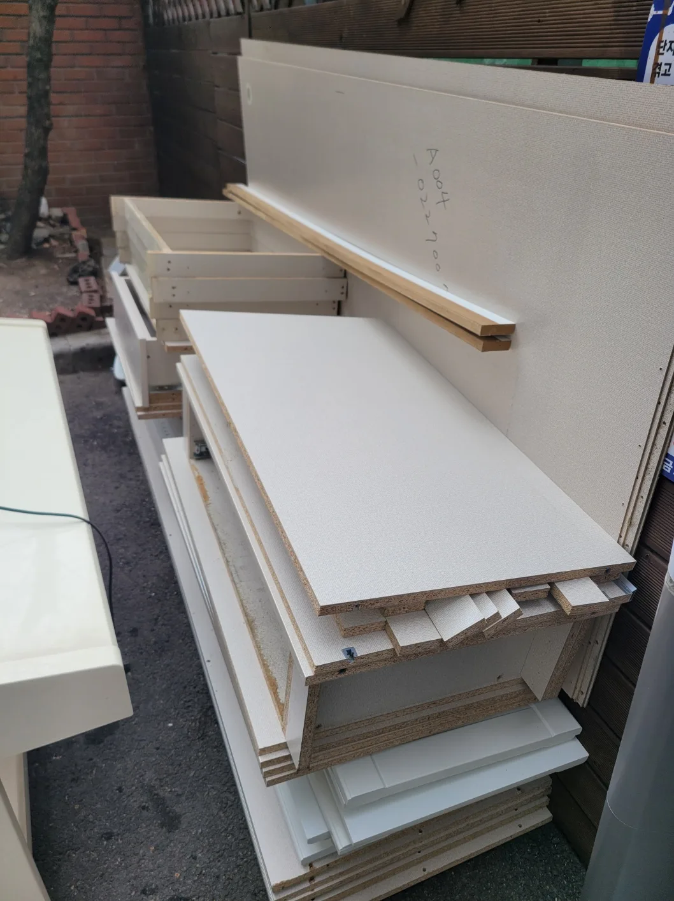
상담 전 확인
붙박이장 이전설치 전 확인 항목
전화 주시기 전에 확인해 두시면 상담과 비용 안내가 한결 빨라집니다
| 항목 | 확인 내용 |
|---|---|
| 브랜드·통 수 | 한샘·리바트·에넥스 등 브랜드와 장롱 몸통 개수(모르면 사진으로 확인) |
| 도어 종류 | 여닫이, 슬라이딩, 거울문, 화장대·서랍 일체형 여부 |
| 작업 종류 | 이사 이전설치, 방 이동, 철거 후 버리기 중 어떤 작업인지 |
| 이동 조건 | 출발지·도착지 주소, 층수, 엘리베이터 유무 |
| 새 공간 | 설치할 벽 길이와 천장 높이, 창문·문 위치 |
진행 절차
붙박이장 이전설치 진행 절차
전화 상담부터 도어 맞춤 점검까지 다섯 단계로 진행됩니다
전화 상담
지역·브랜드·통 수 확인
일정 확정
이사·입주 날짜에 맞춤
분리·해체
도어·선반 먼저, 몸통 순서대로
운반·재설치
수평 맞춘 뒤 몸통 연결
마감 점검
도어 틈·여닫힘 조정
출장 지역
붙박이장 이전설치 출장 지역 안내 (서울·경기·수도권)
주소를 말씀해 주시면 방문 가능 여부를 바로 안내해 드립니다
출장 가능 지역
서울, 경기 및 수도권 전체 방문 상담이 가능합니다. 출발지와 도착지가 다른 지역이어도 함께 진행합니다.
자주 묻는 질문
붙박이장 이전설치 자주 묻는 질문
문의 전에 많이 궁금해하시는 내용입니다
브랜드 가구를 잘 아는 분이 오시나요?
네. 까사미아 5년, 리바트 5년, 한샘 3년 경력의 기사가 직접 방문해 해체부터 재설치까지 진행합니다. 다만 코니처는 각 브랜드의 공식 업체가 아닌 이전·재설치 전문 업체입니다.
한샘 붙박이장 화장대 일체형도 옮길 수 있나요?
네. 화장대·서랍이 함께 붙은 한샘 붙박이장도 유닛별로 나눠 해체하고, 새 공간에서 같은 순서로 다시 연결합니다.
리바트·에넥스 슬라이딩 장롱도 되나요?
네. 리바트와 에넥스 슬라이딩 장롱은 레일과 도어를 먼저 분리해 옮기고, 재설치 후 도어가 끝까지 부드럽게 움직이도록 레일을 맞춥니다. 거울도어도 파손되지 않게 따로 포장합니다.
장롱 버리기도 해 주나요?
네. 붙박이장과 장롱을 해체한 뒤 아파트 단지 안 지정된 폐기 장소까지 옮겨 드립니다. 대형폐기물 배출 신고 방법은 지역과 단지마다 다르니 상담 때 함께 확인해 주세요.
일부는 버리고 일부만 옮길 수 있나요?
네. 몇 통은 새 방으로 옮기고 나머지는 철거해 버리는 식으로 나눠서 진행할 수 있습니다.
붙박이장 이전설치 비용은 어떻게 정해지나요?
장롱 통 수와 도어 종류(여닫이·슬라이딩·거울문), 해체·재설치·철거 범위, 이동 거리와 층수에 따라 달라집니다. 상담 때 조건을 확인한 뒤 안내해 드립니다.
장롱 이전, 장롱 분해만 따로 맡길 수 있나요?
네. 이삿짐센터에서 어렵다고 한 장롱 분해만, 혹은 새 집 장롱 이전 재조립만 따로 진행할 수 있습니다. 짐 빼기 전 분해와 입주 후 조립을 나눠 일정을 잡을 수도 있습니다.
출장 가능 지역은 어디까지인가요?
서울, 경기 및 수도권 전체를 방문합니다.
붙박이장 이전설치, 전화 한 통으로 시작하세요
13년 경력 기사가 해체부터 운반, 재설치, 장롱 버리기까지 직접 진행합니다.
2. 브랜드·장롱 통 수 (모르시면 장롱 모양)
3. 문의 내용 (이사 / 방 이동 / 버리기)